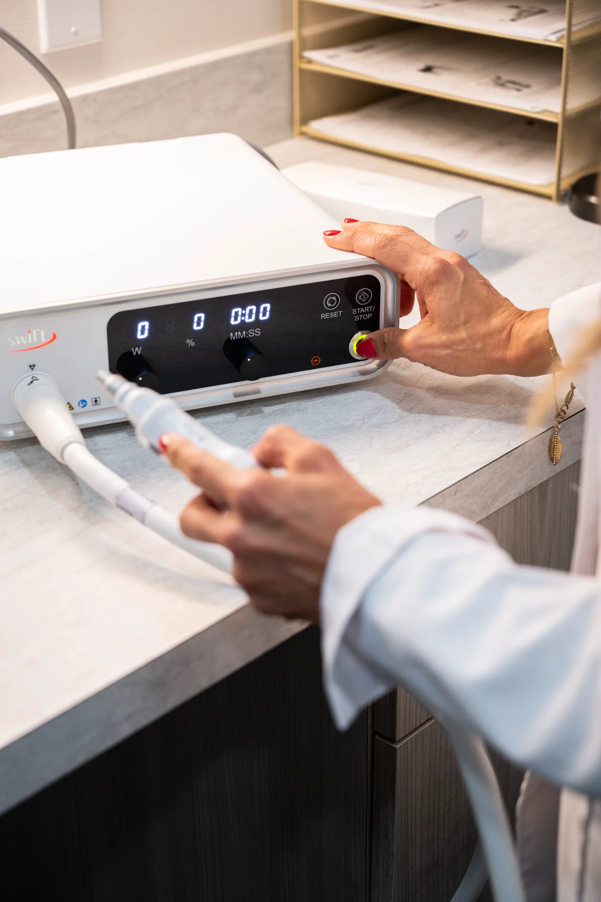
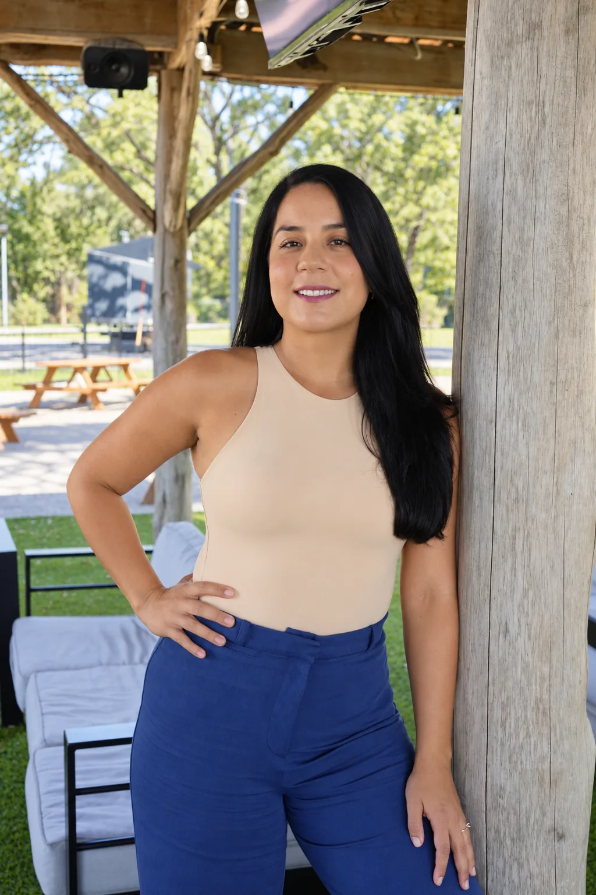

02 · Healthcare
Elite Foot & Ankle
Warm, credible content that makes expertise feel human and helps patient education travel farther.
Explore healthcare marketing ↗Strategy, social content, campaigns and digital experiences—created by one close, curious team from first idea to final frame.


A bilingual creative and content studio helping service, hospitality and lifestyle brands become impossible to overlook.
Positioning, naming, visual identity and websites that make the business easier to recognize, understand and trust.
Explore brand servicesStrategy, concepts, channel management and production built around useful stories—not filler for the feed.
Explore social servicesCampaign creative, paid distribution and video production that work together from the first idea through optimization.
Explore campaign services
Women-led, bilingual and Austin-born. Since 2017, Compass has helped businesses connect strategic thinking to hands-on creative execution.
Meet CompassYes. The team can define the direction, build the campaign or content system, produce the work and support ongoing execution.
Yes. Compass partners with both local and national brands while maintaining its home base in Austin, Texas.
Yes. Compass is bilingual and can develop brand communication and content for English- and Spanish-speaking audiences.
Absolutely. Start with a brand identity, campaign, video or website—or bring Compass in as an ongoing creative partner.